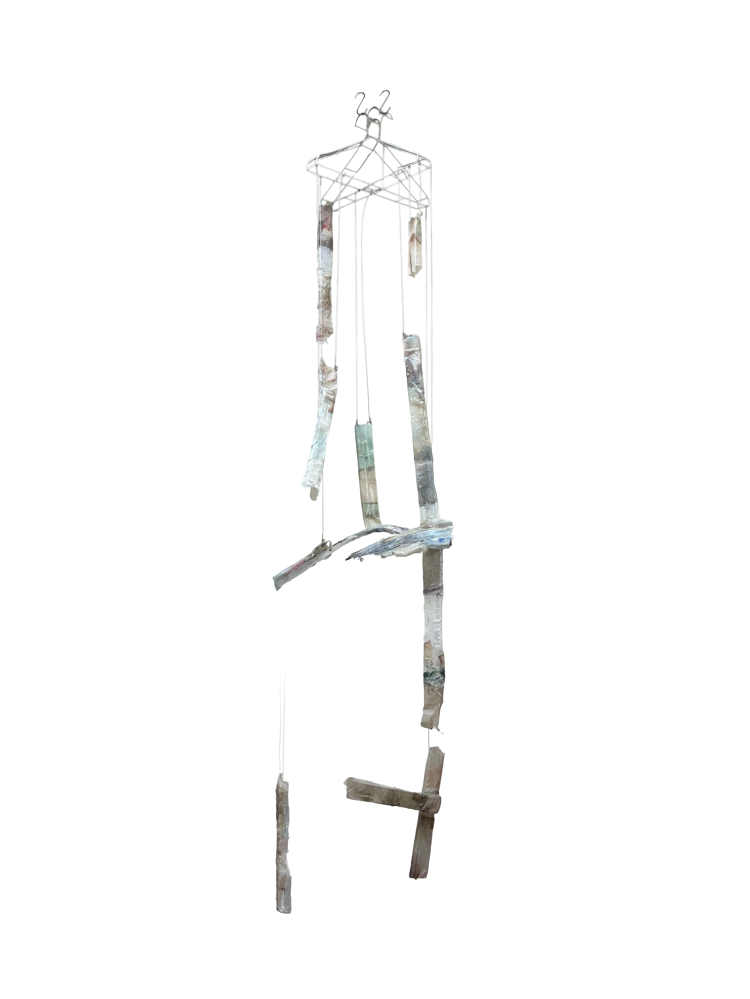
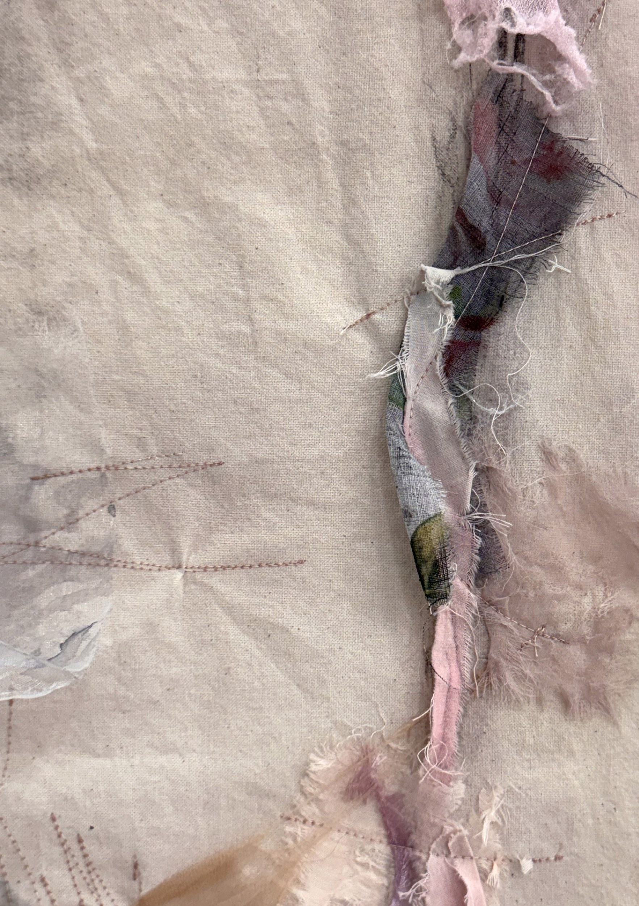

무제, 2026
Mixed media on cotton fabric · 82 × 164 cm
회화에서 출발해 표면과 흔적, 그리고 남아 있는 형태를 살핍니다.

Mixed media on cotton fabric · 82 × 164 cm
Mixed media installation · Dimensions variable
Mixed media sculpture · Dimensions variable
Mixed media installation · 144 × 155 × 30 cm
Mixed media · Details to be updated
Mixed media on cotton fabric · 82 × 164 cm
오랫동안 곁에 두었던 것들은 눈에 띄지 않을 만큼 서서히 달라진다. 그러다 문득 마주한 모습은 기억 속의 익숙한 모양과 닮아 있다. 여전히 이전과 같은 것을 보고 있다고 말할 수 있을까?
남아 있는 것들이 흩어지지 않도록 계속해서 이어보게 된다. 무언가를 엮어 둔다 하더라도 얼마나 오래 남겨둘 수 있을까?
무언가를 오래 남겨두려는 마음은 때로 그것을 다른 모습으로 만든다. 처음의 모습을 온전히 간직할 수는 없다는 아쉬움을 뒤로한 채, 이전의 모습을 떠올리고 지금의 형태를 담아본다. 그렇게 옮겨진 모습은 처음의 것과 조금씩 어긋난다. 어느 것이 원래의 모습에 더 가까운지는 알 수 없다.
KIM INYOUNG · 2026
2026. 11. 23 — 11. 28
홍익대학교 미술학관 3층
서울특별시 마포구 와우산로 94